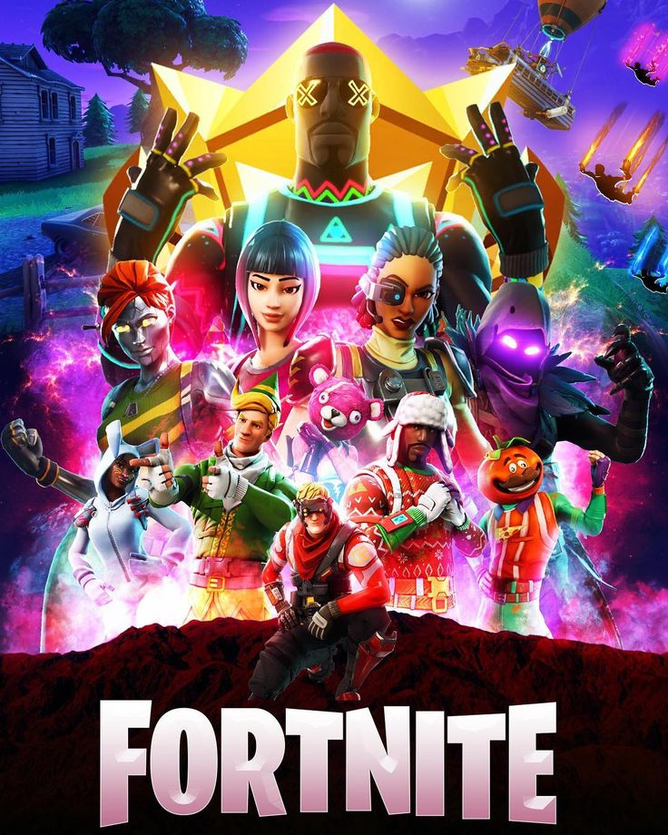

Juegos
Fortnite es un mundo de experiencias múltiples. Dejaos caer en la isla y competid hasta ser los últimos jugadores (o equipos) que queden en pie. Quedad con vuestros amigos para asistir a un concierto o ver una película. Cread un mundo propio con vuestras propias reglas. O eliminad hordas de monstruos con otros jugadores para salvar el mundo.
En la actualidad, podéis descargar Battle Royale de Fortnite, que incluye Fiesta magistral y el modo Creativo, en PlayStation, Xbox, Nintendo Switch, PC y en la aplicación de Epic Games para Android, a través de Fortnite.com/Android o de la Galaxy Store de Samsung. Actualmente, el modo Salvar el mundo está disponible para PlayStation, Xbox y PC.
